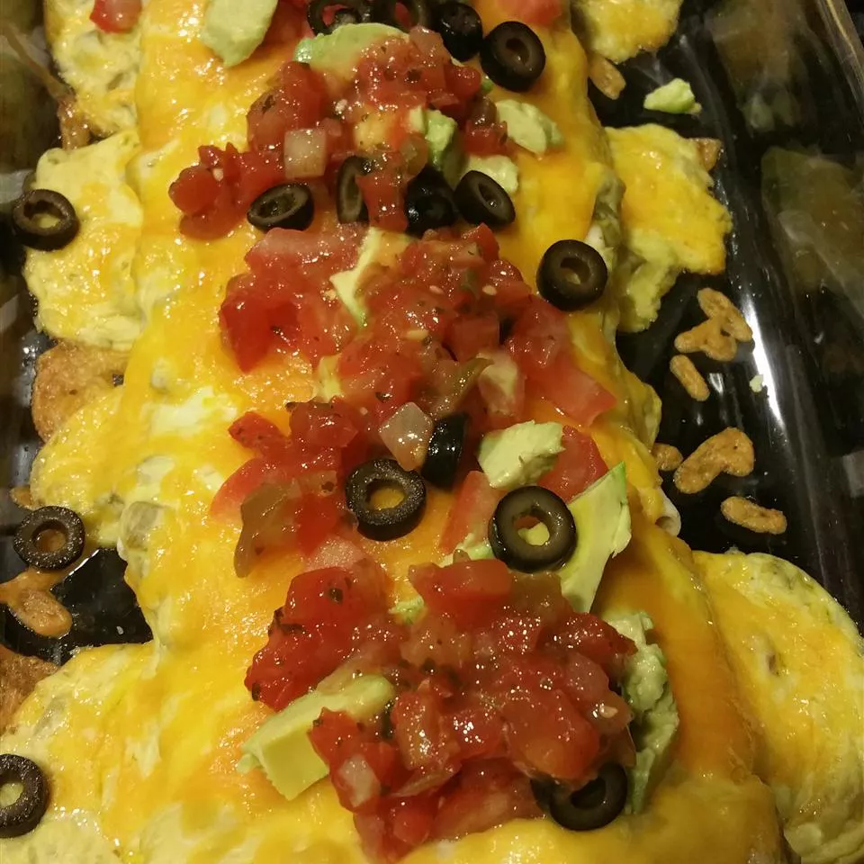

Bean Burrito Casserole
I usually keep burritos stocked in my freezer just for this frozen burrito casserole recipe. It's so quick and easy and tastes delicious. Can be served with tortilla chips and a salad. Or double the sauce, and serve over rice.